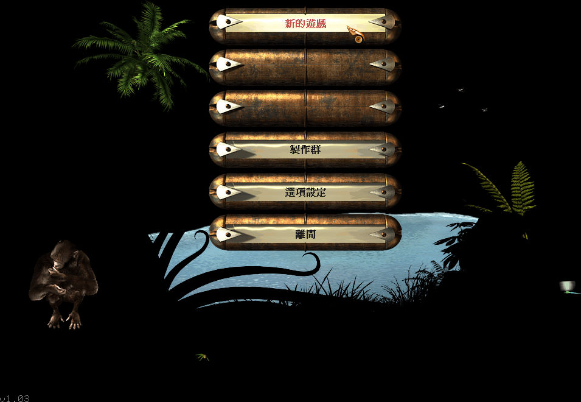
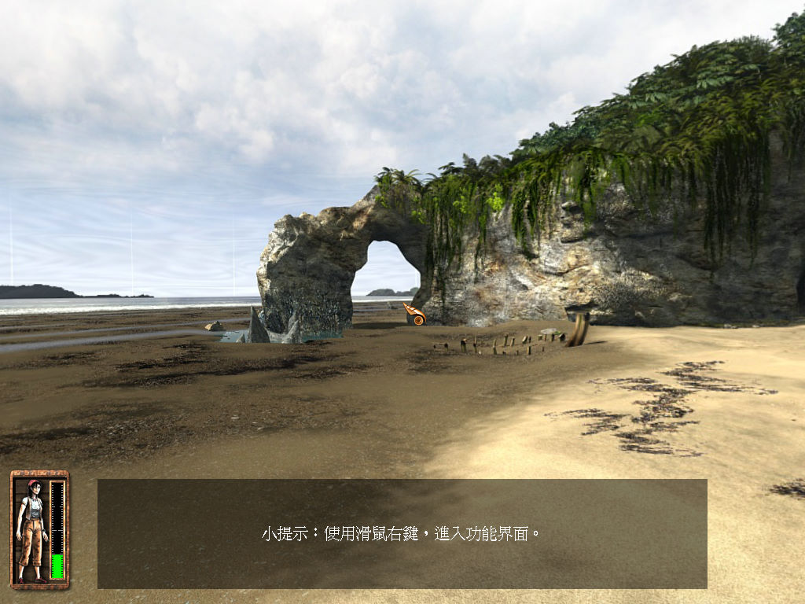

名稱：神秘島1／重返神秘島1 (Return to Mysterious Island，中文版)
簡介：Kheops 2004年出品的冒險解謎遊戲，由Adventure代理發行，2005年由光譜中文化並
代理發行 [待補]。


保護：繁中版為光碟SecuROM 7.11，英文版無保護。
備註：繁中版為1.0.3.2版
備註：VirtualBox無法執行，虛擬機請使用VMware。VMware若發現有殘影，請搭配cnc-ddraw。
備註：VMware若無法通過SecuROM檢驗，請在主機掛載後，再設定給VMware的光碟使用。
檔案：setup_return_to_mysterious_island_1.03_w10_(57388).rar = GOG英文1.0.3.2版